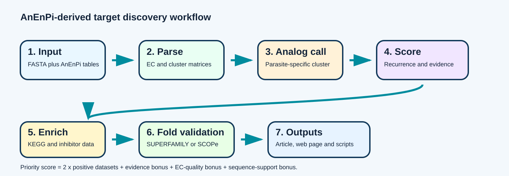
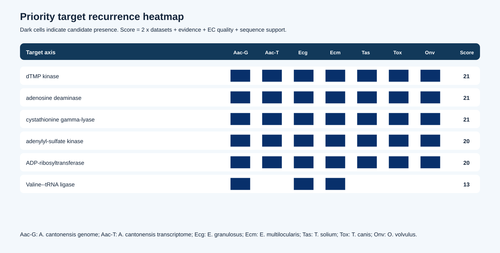

Authors and correspondence
Leandro de Mattos Pereira1,2,*, Carlos Graeff-Teixeira3,4 and Alessandra Loureiro Morassutti4,*
1 Instituto Tecnológico Vale (ITV), Belém, Pará, Brazil.
2 Databiomics, Bioinformatics and Data Science Laboratory, WBPEREIRA, Avenida Coronel José Bastos 700, Aeroporto, Itaperuna, Rio de Janeiro, Brazil.
3 Universidade Federal do Espírito Santo, ES, Brazil.
4 Universidade de Passo Fundo, Passo Fundo, RS, Brazil.
Corresponding authors: info@databiomics.com; almorassutti@gmail.com.
Figure 1. AnEnPi-derived workflow
The workflow below is embedded directly from the repository asset used by the GitHub Pages site.

{kind=link}
Scope note: evidence integration and prioritization were executed. Structural/fold validation with SUPERFAMILY/SCOPe remains a downstream validation step unless corresponding result tables are added.
Main results
7
parasite datasets
parasite datasets
43
curated EC activities
curated EC activities
26
core candidates
core candidates
21
highest priority score
highest priority score
Top target axes
dTMP kinase
EC 2.7.4.9 | score 21
EC 2.7.4.9 | score 21
Adenosine deaminase
EC 3.5.4.4 | score 21
EC 3.5.4.4 | score 21
Cystathionine gamma-lyase
EC 4.4.1.1 | score 21
EC 4.4.1.1 | score 21
APS kinase
EC 2.7.1.25 | score 20
EC 2.7.1.25 | score 20
ADP-ribosyltransferase
EC 2.4.2.31 | score 20
EC 2.4.2.31 | score 20
Valine--tRNA ligase
EC 6.1.1.9 | score 13
EC 6.1.1.9 | score 13
Downloads
{kind=link}
Additional figure
